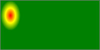
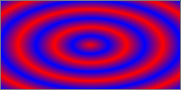

CSS is a language for describing the rendering of structured documents
(such as HTML and XML) on screen, on paper, in speech, etc. This module
contains the features of CSS level 4 relating to the <image> type and
replaced elements. It includes and extends the functionality of CSS Image
Values and Replaced Content Module Level 3. The main extensions compared
to level 3 are several additions to the ‘<image>’ type, additions to the ‘<gradient>’ type,
extentions to the ‘image()’ function,
definitions for interpolating several ‘<image>’ types, and several properties
controlling the interaction of replaced elements and CSS's layout models.
Status of this document
This is a public copy of the editors' draft. It is provided for
discussion only and may change at any moment. Its publication here does
not imply endorsement of its contents by W3C. Don't cite this document
other than as work in progress.
The (archived) public
mailing list
www-style@w3.org (see instructions) is preferred for
discussion of this specification. When sending e-mail, please put the text
“css4-images” in the subject, preferably like this:
“[css4-images] …summary of comment…”
In CSS Levels 1 and 2, image values, such as those used in the ‘background-image’ property, could only be given by
a single URL value. This module introduces additional ways of representing
2D images, for example as a list of URIs
denoting fallbacks, as a reference to an
element, or as a gradient.
This module also defines several properties for manipulating raster images and for sizing or positioning replaced elements such as images
within the box determined by the CSS layout algorithms. It also defines in
a generic way CSS's sizing algorithm for images and
other replaced elements.
1.1. Module Interactions
This module defines and extends the ‘<image>’ value type defined in [CSS3VAL].
Furthermore it replaces the ‘<url>’ type in
the ‘background-image’ and ‘list-style-image’ definitions in CSS1 and CSS2 and
adds ‘<image>’ as
an alternative to ‘<url>’ in the ‘content’ property's value. It is presumed that CSS
specifications beyond CSS2.1 will use the ‘<image>’ notation in place of ‘<url>’ where 2D images are expected. (See e.g. [CSS3BG].)
Of the properties defined in this module, only ‘image-resolution’ applies to
::first-line and ::first-letter.
1.2. Values
This specification follows the CSS property
definition conventions from [CSS21]. Value types not defined in
this specification are defined in CSS Level 2 Revision 1 [CSS21]. Other CSS
modules may expand the definitions of these value types: for example [CSS3COLOR],
when combined with this module, expands the definition of the <color>
value type as used in this specification.
In addition to the property-specific values listed in their
definitions, all properties defined in this specification also accept the
global keywords as their
property value. For readability they has not been repeated explicitly.
2. Planned Features
Resolution tagging in image()
Logical keywords for specifying linear gradient direction.
The ‘<resolution>’ unit represents the size of a
single "dot" in a graphical representation by indicating how many of these
dots fit in a CSS ‘in’, ‘cm’, or ‘px’. For
uses, see e.g. the ‘resolution’ media query in
[MEDIAQ] or the
‘image-resolution’ property defined below.
Note that due to the 1:96 fixed ratio of CSS ‘in’ to CSS ‘px’, ‘1dppx’ is equivalent to ‘96dpi’. This corresponds to the default resolution of
images displayed in CSS: see ‘image-resolution’.
The following @media rule uses Media Queries [MEDIAQ] to assign some special
style rules to devices that use two or more device pixels per CSS
‘px’ unit:
An ‘<image>’
can be used in many CSS properties, including the ‘background-image’, ‘list-style-image’, ‘cursor’ properties [CSS21] (where it replaces the
‘<url>’ component in the property's value).
In some cases, an image is invalid, such as a ‘<url>’ pointing to a resource that is not a valid
image format. An invalid image is rendered as
a solid-color ‘transparent’ image with no
intrinsic dimensions. However, invalid
images have special behavior in some contexts, such as the
‘image()’ notation.
4.1. Image References and
Image Slices: the ‘<url>’ type and ‘url()’ notation
The simplest way to indicate an image is to reference an image file by
URL. This can be done with the ‘url()’ notation, defined in [CSS21].
In the example below, a background image is specified with ‘url()’syntax:
background-image: url(wavy.png);
If the UA cannot download, parse, or otherwise successfully display the
contents at the URL as an image, it must be treated as an invalid image.
4.2. Image Fallbacks and
Annotations: the ‘image()’ notation
Each ‘<string>’ or ‘<url>’ inside ‘image()’
represents an image, just as if the ‘url()’ notation had been used. As usual for URLs in
CSS, relative URLs are resolved to an absolute URL (as described in Values
& Units [CSS3VAL]) when a specified
‘image()’ value is computed.
4.2.1. Image Fragments
When a URL specified in ‘image()’ represents
a portion of a resource (e.g. by the use of media fragment
identifiers) that portion is clipped out of its context and used as a
standalone image.
...the background of the element will be the portion of the image that
starts at (40px,0px) and is 20px wide and tall, which is just the circle
with a quarter filled in.
So that authors can take advantage of CSS's forwards-compatible parsing
rules to provide a fallback for image slices, implementations that support
the ‘image()’ notation must support
the xywh=#,#,#,# form of media fragment identifiers for
images specified via ‘image()’. [MEDIA-FRAGS]
Note that image fragments can also be used with the ‘url()’ notation. However, a legacy UA that doesn't
understand the media fragments notation will ignore the fragment and
simply display the entirety of the image.
Since the ‘image()’ notation requires UAs
to support media fragments, authors can take advantage of CSS's
forward-compatible parsing rules to provide a fallback when using an
image fragment URL:
background-image: url('swirl.png'); /* old UAs */
background-image: image('sprites.png#xywh=10,30,60,20'); /* new UAs */
4.2.2. Image Fallbacks
Multiple ‘<image-decl>s’ can be given separated by commas,
in which case the function represents the first image that's not an invalid image. The final argument can
specify a ‘<color>’ to serve as an ultimate
fallback; this can be used, e.g. for ‘background-image’, to ensure adequate contrast if
none of the preceding ‘<image-decl>s’ can be used. If the final
argument is a ‘<color>’, it represents a
solid-color image of the given color with no intrinsic dimensions. If all of
the provided ‘<image-decl>s’ are invalid images and a fallback color was
not provided as the last argument, the entire ‘image()’ function must be treated as an invalid image.
The rule below would tell the UA to load ‘wavy.svg’ if it can; failing that to load ‘wavy.png’; and failing that to display ‘wavy.gif’. For example, the browser might not
understand how to render SVG images, and the PNG may be temporarily 404
(returning an HTML 404 page, which the browser can't decode as an image)
due to a server move, so the GIF is used until one of the previous
problems corrects itself.
The fallback color can be used to ensure that text is still readable
even when the image fails to load. For example, the following code works
fine if the image is rectangular and has no transparency:
When the image doesn't load, the background color is still there to
ensure that the white text is readable. However, if the image has some
transparency, the black will be visible behind it, which is probably not
desired. The ‘image()’ function addresses
this:
Now, the black won't show at all if the image loads, but if for
whatever reason the image fails, it'll pop in and prevent the white text
from being set against a white background.
If a URL uses a fragment identifier syntax that the implementation does
not understand, or does not consider valid for that type of image, the URL
must be treated as representing an invalid
image. This error-handling is limited to image(),
and not in the definition of URL, for legacy compat reasons.
For example, if a future specification defined a way to refer to a
specific frame of an animated GIF with a fragment identifier, an author
could write the following to get newer browsers to use the GIF's frame,
and older browsers to instead download the fallback image:
At times, one may need a solid-color image for a property or function
that does not accept the ‘<color>’ type
directly. The ‘image()’ function can be used
for this: by specifying only a color without any URLs, the
function immediately falls back to representing a solid-color image of
the chosen color.
In the above, the background is the image "bg-image.png", overlaid
with partially-transparent blue.
4.2.4. Bidi-sensitive Images
Along with each ‘<image-decl>’, the author may specify a
directionality, similar to adding a dir attribute to an
element in HTML. The ‘image()’ function takes
on the directionality of the used ‘<image-decl>’, if any. If a directional image is
used on or in an element with opposite direction,
the image must be flipped in the inline direction (as if it was
transformed by, e.g., scaleX(-1), if the inline direction is
the X axis).
A list may use an arrow for a bullet that points into the content. If
the list can contain both LTR and RTL text, though, the bullet may be on
the left or the right, and an image designed to point into the text on
one side will point out of the text on the other side. This can be fixed
with code like:
<ul style="list-style-image: image("arrow.png" ltr);">
<li dir='ltr'>My bullet is on the left!</li>
<li dir='rtl'>MY BULLET IS ON THE RIGHT!</li>
</ul>
This should render something like:
⇒ My bullet is on the left!
!THGIR EHT NO SI TELLUB YM ⇐
In LTR list items, the image will be used as-is. In the RTL list
items, however, it will be flipped in the inline direction, so it still
points into the content.
4.3. Resolution
Negotiation: the ‘image-set()’ notation
Delivering the most appropriate image resolution for a user's device
can be a difficult task. Ideally, images should be in the same resolution
as the device they're being viewed in, which can vary between users.
However, other factors can factor into the decision of which image to
send; for example, if the user is on a slow mobile connection, they may
prefer to receive lower-res images rather than waiting for a large
proper-res image to load. The ‘image-set()’
function allows an author to ignore most of these issues, simply providing
multiple resolutions of an image and letting the UA decide which is most
appropriate in a given situation.
Each ‘<string>’ or ‘<url>’ inside ‘image-set()’ represents an image, just as if the ‘url()’ notation had
been used. As usual for URLs in CSS, relative URLs are resolved to an
absolute URL (as described in Values & Units [CSS3VAL]) when a specified
‘image-set()’ value is computed.
Every <image-set-decl> in
a given ‘image-set()’ must have a different <resolution>, or else the function
is invalid.
The value that a given ‘image-set()’
represents is determined by the UA first ordering the set of <image-set-decl>s in a
UA-defined order (which should be based on the <resolution> of each <image-set-decl>, but may
include other factors that the UA deems relevant, such as connection
speed). The function then represents the first such image that is not an
invalid image. If a fallback color was
provided, the UA may decide at any point that the remaining <image-set-decl>s are
unsuitable, and choose to use the fallback color instead, in which case
the function represents a solid-color image of the given color with no intrinsic dimensions. If
all of the <image-set-decl>s represent invalid images, then if a fallback color
was provided, the function represents a solid-color image of the given
color with no intrinsic
dimensions; otherwise, the function represents an invalid image.
This example shows how to use ‘image-set()’
to provide an image in three versions: a "normal" version, a "high-res"
version, and an extra-high resolution version for use in printing (as
printers can have extremely high resolution):
4.4. Using Elements as
Images: the ‘element()’ notation
The ‘element()’ function allows an author to
use an element in the document as an image. As the referenced element
changes appearance, the image changes as well. This can be used, for
example, to create live previews of the next/previous slide in a
slideshow, or to reference a canvas element for a fancy generated gradient
or even an animated background.
Note that the ‘element()’
function only reproduces the appearance of the referenced
element, not the actual content and its structure. Authors should only use
this for decorative purposes, and must not use ‘element()’ to reproduce an element with significant
content across the page. Instead, just insert multiple copies of the
element into the document.
The ‘element()’ function references the
element matched by its argument. If multiple elements are matched, the
function references the first such element.
The image represented by the ‘element()’
function can vary based on whether the element is visible in the document:
The function represents an image with its intrinsic size equal to the
decorated bounding box of the
referenced element:
for an element rendered using a CSS rendering model, the decorated bounding box is the
smallest axis-aligned rectangle that contains the border
image areas of all the fragments of the principal box
Note: Because images clip anything outside their bounds by
default, this means that decorations that extend outside the decorated bounding box, like
box shadows, may be clipped.
The image is constructed by rendering the referenced element and its
descendants (at the same size that they would be in the document) over
an infinite ‘transparent’ canvas, positioned
so that the edges of the decorated
bounding box are flush with the edges of the image.
If the referenced element has a transform applied to it or an
ancestor, the transform must be ignored when rendering the element as an
image. [[!CSS-TRANSFORMS]]
If the referenced element is broken across pages, the element is
displayed as if the page content areas were joined flush in the
pagination direction, with pages' edges corresponding to the initial
containing block's start edge aligned. Elements broken
across lines or columns are just rendered with their decorated bounding box.
Implementations may either re-use existing bitmap data generated for
the referenced element or regenerate the display of the element to
maximize quality at the image's size (for example, if the implementation
detects that the referenced element is an SVG fragment); in the latter
case, the layout of the referenced element in the image must not be
changed by the regeneration process. That is, the image must look
identical to the referenced element, modulo rasterization quality.
As a somewhat silly example, a <p> element can be
reused as a background elsewhere in the document:
<style>
#src { color: white; background: lime; width: 300px; height: 40px; }
#dst { color: black; background: element(#src); padding: 20px; margin: 20px 0; }
</style>
<p id='src'>I'm an ordinary element!</p>
<p id='dst'>I'm using the previous element as my background!</p>
The function represents an image with the intrinsic size and
appearance of the paint
source. The host language defines the size and appearance of
paint sources.
For example, the ‘element()’ function can
reference an SVG <pattern> element in an HTML document:
<!DOCTYPE html>
<svg>
<defs>
<pattern id='pattern1'>
<path d='...'>
</pattern>
</defs>
</svg>
<p style="background: element(#pattern1)">
I'm using the pattern as a background!
If the pattern is changed or animated,
my background will be updated too!
</p>
HTML also defines that a handful of elements, such as
<canvas>, <img>, and
<video>, provide a paint source. This means that CSS
can, for example, reference a canvas that's being drawn into, but not
displayed in the page:
<!DOCTYPE html>
<script>
var canvas = document.querySelector('#animated-bullet');
canvas.width = 20; canvas.height = 20;
drawAnimation(canvas);
</script>
<canvas id='animated-bullet' style='display:none'></canvas>
<ul style="list-style-image: element(#animated-bullet);">
<li>I'm using the canvas as a bullet!</li>
<li>So am I!</li>
<li>As the canvas is changed over time with Javascript,
we'll all update our bullet image with it!</li>
</ul>
For example, all of the following ‘element()’ uses will result in a transparent
background:
<!DOCTYPE html>
<p id='one' style="display:none;">one</p>
<iframe src="http://example.com">
<p id='two'>I'm fallback content!</p>
</iframe>
<ul>
<li style="background: element(#one);">
A display:none element isn't rendered, and a P element
doesn't provide a paint source.
</li>
<li style="background: element(#two);">
The descendants of a replaced element like an IFRAME
can't be used in element() either.
</li>
<li style="background: element(#three);">
There's no element with an id of "three", so this also
gets rendered as a transparent image.
</li>
</ul>
An element is not rendered if it does not have an
associated box. This can happen, for example, if the element or an
ancestor is ‘display:none’. Host languages may
define additional ways in which an element can be considered not rendered;
for example, in SVG, any descendant of a <defs> element is
considered to be not rendered.
The ‘element()’ function can be put to many
uses. For example, it can be used to show a preview of the previous or
next slide in a slideshow:
In this example, the navigateSlides function updates the
ids of the next and previous slides, which are then displayed in small
floating boxes alongside the slides. Since you can't interact with the
slides through the ‘element()’ function (it's
just an image), you could even use click handlers on the
preview boxes to help navigate through the page.
4.4.1. Paint Sources
Host languages may define that some elements provide a paint source. Paint sources have
an intrinsic width, height, and appearance, separate from the process of
rendering, and so may be used as images even when they're not
rendered.
In HTML, the <img>, <video>, and
<canvas> elements provide paint sources (defined in each
element's section in HTML5).
In SVG, any element that provides a paint server provides a
paint source. Note: In SVG1.1, the
<linearGradient>, <radialGradient>, and
<pattern> elements provide paint sources. They are
drawn as described in the spec, with the coordinate systems defined as
follows:
The coordinate system has its origin at the top left corner of the
rectangle defined by the concrete
object size that it's being drawn into, and the same width and
height as the concrete object
size. User
coordinates are sized equivalently to the CSS ‘px’ unit.
It is expected that a future version of this module will
define ways to refer to paint sources in external documents, or ones that
are created solely by script and never inserted into a document at all.
4.4.2. Cycle Detection
The ‘element()’ function can produce
nonsensical circular relationships, such as an element using itself as its
own background. These relationships can be easily and reliably detected
and resolved, however, by keeping track of a dependency graph and using
common cycle-detection algorithms.
The dependency graph consists of edges such that:
every element depends on its children
for any element A with a property using the ‘element()’ function pointing to an element B, A
depends on B
if a host language defines a way for elements to refer to the
rendering of other elements, the referencing element depends on the
referenced element. For example, in SVG, a <use> element depends on
the element it referenced.
If the graph contains a cycle, any ‘element()’ functions participating in the cycle are invalid images.
4.5. Combining images:
the ‘cross-fade()’ notation
When transitioning between images, CSS requires a way to explicitly
refer to the intermediate image that is a combination of the start and end
images. This is accomplished with the ‘cross-fade()’ function, which indicates the two images
to be combined and how far along in the transition the combination is.
Authors can also use the ‘cross-fade()’ function for many simple image
manipulations, such as tinting an image with a solid color or highlighting
a particular area of the page by combining an image with a radial
gradient.
The function represents an image generated by combining the first and
second image (referred to in this section as the "start" and "end" images,
respectively). The percentage represents how far along the transformation
is, with 0% representing the start image, 100% representing the end image,
and percentages between that representing corresponding combinations of
the two images. The <percentage> must be between 0% and
100% inclusive; any other value is invalid.
More precisely, given ‘cross-fade(A,B,p)’,
where A and B are images and p is a
percentage between 0% and 100%, the function represents an image with
width equal to widthA × (1-p) +
widthB × p and height equal to heightA
× (1-p) + heightB × p. The contents of the
image must be constructed by first scaling A and B
to the size of the generated image, then applying
dissolve(A,1-p) plus
dissolve(B,p). The
"dissolve()" function and "plus" compositing operator are defined in the
literature by Porter-Duff.
5. Gradients
A gradient is an image that smoothly fades from one color to another.
These are commonly used for subtle shading in background images, buttons,
and many other things. The gradient notations described in this section
allow an author to specify such an image in a terse syntax, so that the UA
can generate the image automatically when rendering the page. The syntax
of a <gradient> is:
As with the other <image> types
defined in this specification, gradients can be used in any property that
accepts images. For example:
background: linear-gradient(white, gray);
list-style-image: radial-gradient(circle, #006, #00a 90%,
#0000af 100%, white 100%)
A gradient is drawn into a box with the dimensions of the concrete object size, referred to
as the gradient box. However, the gradient
itself has no intrinsic
dimensions.
For example, if you use a gradient as a background, by default the
gradient will draw into a gradient box
the size of the element's padding box. If ‘background-size’ is explicitly set to a value
such as ‘100px 200px’, then the gradient box will be 100px wide and 200px
tall. Similarly, for a gradient used as a ‘list-style-image’, the box would be a 1em square,
which is the default object
size for that property.
5.1. Linear Gradients:
the ‘linear-gradient()’ notation
A linear gradient is created by specifying a gradient line and then
several colors placed along that line. The image is constructed by
creating an infinite canvas and painting it with lines perpendicular to
the gradient line, with the color of the painted line being the color of
the gradient line where the two intersect. This produces a smooth fade
from each color to the next, progressing in the specified direction.
The first argument to the function specifies the gradient line, which gives the gradient a direction
and determines how color-stops are positioned. It may be omitted; if so,
it defaults to ‘to bottom’.
For the purpose of this argument, ‘0deg’
points upward, and positive angles represent clockwise rotation, so
‘90deg’ point toward the right.
using keywords
If the argument is ‘to top’, ‘to right’, ‘to bottom’, or
‘to left’, the angle of the gradient line is ‘0deg’, ‘90deg’, ‘180deg’, or ‘270deg’,
respectively.
If the argument instead specifies a corner of the box such as
‘to top left’, the gradient line must be angled such that
it points into the same quadrant as the specified corner, and is
perpendicular to a line intersecting the two neighboring corners of the
gradient box. This
causes a color-stop at 50% to intersect the two neighboring corners (see
example).
Starting from the center of the gradient
box, extend a line at the specified angle in both directions. The
ending point is the point on the gradient
line where a line drawn perpendicular to the gradient line would intersect the corner
of the gradient box in the specified
direction. The starting point is determined identically, but in the
opposite direction.
It is expected that the next level of this module will
provide the ability to define the gradient's direction relative to the
current text direction and writing-mode.
This example illustrates visually how to calculate the gradient line from the rules above.
This shows the starting and ending point of the gradient line, long with the actual
gradient, produced by an element with ‘background:
linear-gradient(45deg, white, black);’.
Notice how, though the starting point and ending point are outside of
the box, they're positioned precisely right so that the gradient is pure
white exactly at the corner, and pure black exactly at
the opposite corner. That's intentional, and will always be true for
linear gradients.
The gradient's color stops are typically placed between the starting
point and ending point on the gradient
line, but this isn't required - the gradient line extends infinitely in both
directions. The starting point and ending point are merely arbitrary
location markers - the starting point defines where 0%, 0px, etc are
located when specifying color-stops, and the ending point defines where
100% is located. Color-stops are allowed to have positions before 0% or
after 100%.
The color of the gradient at any point is determined by finding the
unique line passing through that point that is perpendicular to the gradient line. The point's color is the
color of the gradient line at the
point where this line intersects it.
5.1.2.
Linear Gradient Examples
All of the following ‘linear-gradient()’
examples are presumed to be backgrounds applied to a box that is 200px
wide and 100px tall.
Below are various ways of specifying a basic vertical gradient:
This demonstrates the use of an angle in the gradient. Note that,
though the angle is not exactly the same as the angle between the
corners, the gradient line is still
sized so as to make the gradient yellow exactly at the upper-left corner,
and blue exactly at the lower-right corner.
This demonstrates a 3-color gradient, and how to specify the location
of a stop explicitly:
linear-gradient(yellow, blue 20%, #0f0);
This demonstrates a corner-to-corner gradient specified with keywords.
Note how the gradient is red and blue exactly in the bottom-left and
top-right corners, respectively, exactly like the second example.
Additionally, the angle of the gradient is automatically computed so that
the color at 50% (in this case, white) stretches across the top-left and
bottom-right corners.
linear-gradient(to top right, red, white, blue)
5.2. Radial Gradients:
the ‘radial-gradient()’ notation
In a radial gradient, rather than colors smoothly fading from one side
of the gradient box to the other as
with linear gradients, they instead emerge from a single point and
smoothly spread outward in a circular or elliptical shape.
A radial gradient is specified by indicating the center of the gradient
(where the 0% ellipse will be) and the size and shape of the ending shape (the 100% ellipse). Color stops are
given as a list, just as for ‘linear-gradient()’. Starting from the center and
progressing towards (and potentially beyond) the ending shape uniformly-scaled concentric
ellipses are drawn and colored according to the specified color stops.
Here is an example of a circular radial gradient 5em wide and
positioned with its center in the top left corner:
radial-gradient(5em circle at top left, yellow, blue)
The arguments are defined as follows:
<position>
Determines the center of the gradient. The <position> value
type (which is also used for ‘background-position’) is defined in [CSS3VAL], and is
resolved using the center-point as the object area and the gradient box as the positioning area. If
this argument is omitted, it defaults to ‘center’.
<shape>
Can be either ‘circle’ or ‘ellipse’; determines whether the gradient's ending shape is a circle or an ellipse,
respectively. If <shape> is omitted, the
ending shape defaults to a circle if
the <size> is a single <length>, and to
an ellipse otherwise.
<size>
Determines the size of the gradient's ending shape. If omitted it defaults to
‘farthest-corner’. It can be given explicitly or
by keyword. For the purpose of the keyword definitions, consider the gradient box edges as extending
infinitely in both directions, rather than being finite line segments.
If the ending-shape is an ellipse, its axises are aligned with the
horizontal and vertical axises.
Both ‘circle’ and ‘ellipse’ gradients accept the following keywords as
their <size>:
‘closest-side’
The ending shape is sized so
that it exactly meets the side of the gradient box closest to the gradient's
center. If the shape is an ellipse, it exactly meets the closest side
in each dimension.
The ending shape is sized so
that it passes through the corner of the gradient box closest to the gradient's
center. If the shape is an ellipse, the ending shape is given the same
aspect-ratio it would have if ‘closest-side’ were specified.
‘farthest-corner’
Same as ‘closest-corner’, except the ending shape is sized based on the
farthest corner. If the shape is an ellipse, the ending shape is given the same aspect
ratio it would have if ‘farthest-side’ were specified.
If <shape> is specified as ‘circle’ or is omitted, the <size> may be given explicitly as:
<length>
Gives the radius of the circle explicitly. Negative values are
invalid.
Note that percentages are not allowed here;
they can only be used to specify the size of an elliptical gradient,
not a circular one. This restriction exists because there is are
multiple reasonable answers as to which dimension the percentage
should be relative to. A future level of this module may provide the
ability to size circles with percentages, perhaps with more explicit
controls over which dimension is used.
If <shape> is specified as ‘ellipse’ or is omitted, <size> may instead be given explicitly as:
[<length> | <percentage>]{2}
Gives the size of the ellipse explicitly. The first value
represents the horizontal radius, the second the vertical radius.
Percentages values are relative to the corresponding dimension of the
gradient box. Negative values are
invalid.
Expanded with the above definitions, the grammar becomes:
Color-stops are placed on a gradient ray,
similar to the gradient line of linear
gradients. The gradient ray is anchored
at the center of the gradient and extends toward the right. The 0%
location is at the start of the gradient
ray, and the 100% location is on the point where the gradient ray intersects the ending shape. A color-stop can be placed
at a negative location; though the negative region of the gradient ray is never directly consulted
for rendering, color stops placed there can affect the color of
non-negative locations on the gradient
ray through interpolation or repetition (see repeating gradients). For example,
‘radial-gradient(red -50px, yellow 100px)’
produces an elliptical gradient that starts with a reddish-orange color in
the center (specifically, #f50) and transitions to yellow. Locations
greater than 100% simply specify a location a correspondingly greater
distance from the center of the gradient.
The color of the gradient at any point is determined by first finding
the unique ellipse passing through that point with the same center,
orientation, and ratio between major and minor axises as the ending-shape.
The point's color is then the color of the gradient ray at the location where this
ellipse intersects it.
5.2.3.
Degenerate Radial Gradients
Some combinations of position, size, and shape will produce a circle or
ellipse with a radius of 0. This will occur, for example, if the center is
on a gradient box edge and ‘closest-side’ or
‘closest-corner’ is specified or if the size and
shape are given explicitly and either of the radiuses is zero. In these
degenerate cases, the gradient must be be rendered as follows:
Render as if the ending shape was
a circle whose radius was an arbitrary very small number greater than
zero. This will make the gradient continue to look like
a circle.
If the ending shape has zero width
(regardless of the height):
Render as if the ending shape was
an ellipse whose height was an arbitrary very large number and whose
width was an arbitrary very small number greater than zero. This will make the gradient look similar to a horizontal
linear gradient that is mirrored across the center of the ellipse. It
also means that all color-stop positions specified with a percentage
resolve to ‘0px’.
Render as if the ending shape was
an ellipse whose width was an arbitrary very large number and whose
height was an arbitrary very small number greater than zero. This will make the gradient look like a solid-color image
equal to the color of the last color-stop, or equal to the average color
of the gradient if it's repeating.
5.2.4.
Radial Gradient Examples
All of the following examples are applied to a box that is 200px wide
and 100px tall.
These examples demonstrate different ways to write the basic syntax
for radial gradients:
radial-gradient(yellow, green);
radial-gradient(ellipse at center, yellow 0%, green 100%);
radial-gradient(farthest-corner at 50% 50%, yellow, green);
radial-gradient(circle, yellow, green);
radial-gradient(red, yellow, green);
This image shows a gradient originating from somewhere other than the
center of the box:
radial-gradient(farthest-side at left bottom, red, yellow 50px, green);
radial-gradient(closest-side at 20px 30px, red, yellow, green);
radial-gradient(20px 30px at 20px 30px, red, yellow, green);

radial-gradient(closest-side circle at 20px 30px, red, yellow, green);
radial-gradient(20px 20px at 20px 30px, red, yellow, green);
5.3. Repeating
Gradients: the ‘repeating-linear-gradient()’
and ‘repeating-radial-gradient()’ notations
In addition to <linear-gradient> and <radial-gradient>, this
specification defines <repeating-linear-gradient> and
<repeating-radial-gradient>
values. These two notations take the same values and are interpreted the
same as their respective non-repeating siblings defined previously.
When rendered, however, the color-stops are repeated infinitely in both
directions, with their positions shifted by multiples of the difference
between the last specified color-stop's position and the first specified
color-stop's position. For example, ‘repeating-linear-gradient(red 10px, blue 50px)’ is
equivalent to ‘linear-gradient(..., red -30px, blue
10px, red 10px, blue 50px, red 50px, blue 90px, ...)’. Note that
the last color-stop and first color-stop will always coincide at the
boundaries of each group, which will produce sharp transitions if the
gradient does not start and end with the same color.
Repeating gradient syntax is identical to that of non-repeating
gradients:
repeating-linear-gradient(red, blue 20px, red 40px)
repeating-radial-gradient(red, blue 20px, red 40px)

repeating-radial-gradient(circle closest-side at 20px 30px, red, yellow, green 100%, yellow 150%, red 200%)
If the distance between the first and last color-stops is non-zero, but
is small enough that the implementation knows that the physical resolution
of the output device is insufficient to faithfully render the gradient,
the implementation must find the average color of the
gradient and render the gradient as a solid-color image equal to
the average color.
If the distance between the first and last color-stops is zero (or
rounds to zero due to implementation limitations), the implementation must
find the average color of a gradient
with the same number and color of color-stops, but with the first and last
color-stop an arbitrary non-zero distance apart, and the remaining
color-stops equally spaced between them. Then it must render the gradient
as a solid-color image equal to that average color.
If the height of a repeating radial gradient is zero, or is close
enough to zero that the implementation knows that the physical resolution
of the output device is insufficient to faithfully render the gradient,
the implementation must find the average color of the
gradient and render the gradient as a solid-color image equal to
the average color.
To find the average color of a gradient,
run these steps:
Define list as an initially-empty list of premultiplied
RGBA colors, and total-length as the distance between first
and last color stops.
For each adjacent pair of color-stops, define weight as
half the distance between the two color-stops, divided by
total-length. Add two entries to list, the first
obtained by representing the color of the first color-stop in
premultiplied sRGBA and scaling all of the components by
weight, and the second obtained in the same way with the
second color-stop.
Sum the entries of list component-wise to produce the
average color, and return it.
As usual, implementations may use whatever algorithm they
wish, so long as it produces the same result as the above.
For example, the following gradient is rendered as a solid
light-purple image (equal to rgb(75%,50%,75%)):
repeating-linear-gradient(red 0px, white 0px, blue 0px);
The following gradient would render the same as the previous under
normal circumstances (because desktop monitors can't faithfully render
color-stops 1/10th of a pixel apart), but would render as a normal
repeating gradient if, for example, the author applied "zoom:100;" to the
element on which the gradient appears:
repeating-linear-gradient(red 0px, white .1px, blue .2px);
Color-stops are points placed along the line defined by the gradient line at the beginning of the
rule. Color-stops must be specified in order. Percentages refer to the
length of the gradient line, with 0% being at the starting point and 100%
being at the ending point. Lengths are measured from the starting point in
the direction of the ending point. Color-stops are usually placed between
the starting point and ending point, but that's not required; the gradient
line extends infinitely in both directions, and a color-stop can be placed
at any position on the line.
At each color-stop, the line is the color of the color-stop. Between
two color-stops, the line's color is linearly interpolated between the
colors of the two color-stops, with the interpolation taking place in
premultiplied RGBA space. Before the first color-stop, the line is the
color of the first color-stop. After the last color-stop, the line is the
color of the last color-stop.
The following steps must be applied in order to process the
list of color-stops. After applying these rules, all color-stops will have
a definite position and they will be in ascending order:
If the first color-stop does not have a position, set its position to
0%. If the last color-stop does not have a position, set its position to
100%.
If a color-stop has a position that is less than the specified
position of any color-stop before it in the list, set its position to be
equal to the largest specified position of any color-stop before it.
If any color-stop still does not have a position, then, for each run
of adjacent color-stops without positions, set their positions so that
they are evenly spaced between the preceding and following color-stops
with positions.
If multiple color-stops have the same position, they produce an
infinitesimal transition from the one specified first in the rule to the
one specified last. In effect, the color suddenly changes at that position
rather than smoothly transitioning.
Below are several pairs of gradients. The latter of each pair is a
manually "fixed-up" version of the former, obtained by applying the above
rules. For each pair, both gradients will render identically. The numbers in each arrow specify which fixup steps are
invoked in the transformation.
1. linear-gradient(red, white 20%, blue)
=1=>
linear-gradient(red 0%, white 20%, blue 100%)
2. linear-gradient(red 40%, white, black, blue)
=13=>
linear-gradient(red 40%, white 60%, black 80%, blue 100%)
3. linear-gradient(red -50%, white, blue)
=13=>
linear-gradient(red -50%, white 25%, blue 100%)
4. linear-gradient(red -50px, white, blue)
=13=>
linear-gradient(red -50px, white calc(-25px + 50%), blue 100%)
5. linear-gradient(red 20px, white 0px, blue 40px)
=2=>
linear-gradient(red 20px, white 20px, blue 40px)
6. linear-gradient(red, white -50%, black 150%, blue)
=12=>
linear-gradient(red 0%, white 0%, black 150%, blue 150%)
7. linear-gradient(red 80px, white 0px, black, blue 100px)
=23=>
linear-gradient(red 80px, white 80px, black 90px, blue 100px)
The following example illustrates the difference between a gradient
transitioning in pre-multiplied sRGBA and one transitioning (incorrectly)
in non-premultiplied. In both of these example, the gradient is drawn
over a white background. Both gradients could be written with the
following value:
linear-gradient(90deg, red, transparent, blue)
In premultiplied space, transitions to or from "transparent" always
look nice:
On the other hand, if a gradient were to incorrectly transition in
non-premultiplied space, the colors near "transparent" would noticeably
darken to a grayish color, because "transparent" is actually a shorthand
for ‘rgba(0,0,0,0)’, or transparent black:
Note: It is recommended that authors not mix different types
of units, such as px, em, or %, in a single rule, as this can cause a
color-stop to unintentionally try to move before an earlier one. For
example, the rule ‘background-image:
linear-gradient(yellow 100px, blue 50%)’ wouldn't require any
fix-up as long as the background area is at least 200px tall. If it was
150px tall, however, the blue color-stop's position would be equivalent to
"75px", which precedes the yellow color-stop, and would be corrected to a
position of 100px.
Note: The definition and implications of "premultiplied"
color spaces are given elsewhere in the technical literature, but a quick
primer is given here to illuminate the process. Given a color expressed as
an rgba() 4-tuple, one can convert this to a premultiplied representation
by multiplying the red, green, and blue components by the alpha component.
For example, a partially-transparent blue may be given as
rgba(0,0,255,.5), which would then be expressed as [0, 0, 127.5, .5] in
its premultiplied representation. Interpolating colors using the
premultiplied representations rather than the plain rgba representations
tends to produce more attractive transitions, particularly when
transitioning from a fully opaque color to fully transparent. Note that
transitions where either the transparency or the color are held constant
(for example, transitioning between rgba(255,0,0,100%) and
rgba(0,0,255,100%) or rgba(255,0,0,100%) and rgba(255,0,0,0%)) have
identical results whether the color interpolation is done in premultiplied
or non-premultiplied color-space. Differences only arise when both the
color and transparency differ between the two endpoints.
6. Sizing Images and Objects in CSS
Images used in CSS may come from a number of sources: from binary image
formats (such as gif, jpeg, etc), dedicated markup formats (such as SVG),
and CSS-specific formats (such as the linear-gradient() value type defined
in this specification). As well, a document may contain many other types
of objects, such as video, plugins, or nested documents. These images and
objects (just objects hereafter) may offer many
types of sizing information to CSS, or none at all. This section defines
generically the size negotiation model between the object and the CSS
layout algorithms.
6.1. Object-Sizing
Terminology
In order to define this handling, we define a few terms, to make it
easier to refer to various concepts:
intrinsic dimensions
The term intrinsic dimensions refers to the set of the intrinsic height, intrinsic width, and intrinsic aspect ratio (the ratio
between the width and height), each of which may or may not exist for a
given object. These intrinsic dimensions represent a preferred or
natural size of the object itself; that is, they are not a function of
the context in which the object is used. CSS does not define how the
intrinsic dimensions are found in general.
Raster images are an example of an object with all three intrinsic
dimensions. SVG images designed to scale might have only an intrinsic
aspect ratio; SVG images can also be created with only an intrinsic
width or height. CSS gradients, defined in this specification, are an
example of an object with no intrinsic dimensions at all. Another
example of this is embedded documents, such as the
<iframe> element in HTML. An object cannot have only two
intrinsic dimensions, as any two automatically define the third.
If an object (such as an icon) has multiple sizes, then the largest
size (by area) is taken as its intrinsic size. If it has multiple aspect
ratios at that size, or has multiple aspect ratios and no size, then the
aspect ratio closest to the aspect ratio of the default object size is used.
Determine this by seeing which aspect ratio produces the largest area
when fitting it within the default
object size using a contain fit; if multiple sizes tie
for the largest area, the wider size is chosen as its intrinsic size.
specified size
The specified size of an object is given by CSS, such as through the
‘width’ and ‘height’ or ‘background-size’ properties. The specified size
can be a definite width and height, a set of constraints, or a
combination thereof.
When an image or object is specified in a document, such as through a
‘url()’ value in a ‘background-image’ property or a src
attribute on an <img> element, CSS queries the object for
its intrinsic dimensions.
Unless otherwise specified by CSS, the object is then clipped to the
concrete object size.
6.3. Concrete
Object Size Resolution
Currently the rules for sizing objects are described in each context
that such objects are used. This section defines some common sizing
constraints and how to resolve them so that future specs can refer to them
instead of redefining size resolution in each instance.
6.3.1. Default Sizing
Algorithm
The default sizing algorithm is
a set of rules commonly used to find an object's concrete object size. It resolves
the simultaneous constraints presented by the object's intrinsic dimensions and either an
unconstrained specified size or one
consisting of only a definite width and/or height.
Some object sizing rules (such as those for ‘list-style-image’) correspond exactly to the default sizing algorithm.
Others (such as those for ‘border-image’)
invoke the default sizing algorithm but also apply additional sizing rules
before arriving at a final concrete
object size.
If the specified size is only a
width or height (but not both) then the concrete object size is given
that specified width or height. The other dimension is calculated as
follows:
A contain constraint is resolved by
setting the concrete object
size to the largest rectangle that has the object's intrinsic aspect ratio and
additionally has neither width nor height larger than the constraint
rectangle's width and height, respectively.
A cover constraint is resolved by
setting the concrete object
size to the smallest rectangle that has the object's intrinsic aspect ratio and
additionally has neither width nor height smaller than the constraint
rectangle's width and height, respectively.
In both cases, if the object doesn't have an intrinsic aspect ratio,
the concrete object size is the
specified constraint rectangle.
6.4. Examples of
CSS Object Sizing
The following examples show how the CSS 2.1 and CSS3 Backgrounds &
Borders sizing algorithms correspond to concepts defined in this
specification.
Border images are sized twice: first the entire image is sized to
determine the slice points, then the slices are sized to decorate the
border. The first sizing operation is defined in CSS3BG§6.2
and uses the default sizing
algorithm with no specified
size, and the border
image area as the default object
size. The second operation is defined in CSS3BG§6.2:
the default sizing
algorithm is used to determine an initial size for each slice
with the corresponding border image area part as the default
object size. By default the specified
size matches this default
object size; however the ‘border-image-repeat’ property can drop the
specified size in one or more directions and may also apply an
additional rounding step. [CSS3BG]
Objects inserted via the CSS2.1 ‘content’ property are anonymous replaced
elements, and are sized the same way. [CSS21] Note that such anonymous
elements have all their non-inherited properties (including ‘width’, ‘height’, etc.) set to their initial values.
The ‘object-fit’ property specifies how the
contents of a replaced element should be fitted to the box established by
its used height and width.
‘fill’
The replaced content is sized to fill the element's content box: the
object's concrete object size
is the element's used width and height.
‘contain’
The replaced content is sized to maintain its aspect ratio while
fitting within the element's content box: its concrete object size is resolved
as a contain constraint against
the element's used width and height.
‘cover’
The replaced content is sized to maintain its aspect ratio while
filling the element's entire content box: its concrete object size is resolved
as a cover constraint against the
element's used width and height.
‘none’
The replaced content is not resized to fit inside the element's
content box: determine the object's concrete object size using the default sizing algorithm with
no specified size, and a default object
size equal to the replaced element's used width and height.
‘scale-down’
Size the content as if ‘none’ or ‘contain’ were specified, whichever would result in a
smaller concrete object size.
Note that both ‘none’ and
‘contain’ respect the content's intrinsic
aspect ratio, so the concept of "smaller" is well-defined.
If the content does not completely fill the replaced element's content
box, the unfilled space shows the replaced element's background. Since
replaced elements always clip their contents to the content box, the
content will never overflow. See the ‘object-position’ property for positioning the
object with respect to the content box.
An example showing how four of the values of ‘object-fit’ cause the
replaced element (blue figure) to be scaled to fit its height/width box
(shown with a green background), using the initial value for ‘object-position’. The fifth value, ‘scale-down’, in this case looks identical to ‘contain’.
Note: Per the CSS⇋Object
Negotiation algorithm, the concrete
object size (or, in this case, the size of the content) does not
directly scale the object itself - it is merely passed to the object as
information about the size of the visible canvas. How to then draw into
that size is up to the image format. In particular, raster images always
scale to the given size, while SVG uses the given size as the size of the
"SVG Viewport" (a term defined by SVG) and then uses the values of several
attributes on the root <svg> element to determine how to draw itself.
The ‘object-position’ property determines the
alignment of the replaced element inside its box. The <position> value
type (which is also used for ‘background-position’) is defined in [CSS3VAL], and is
resolved using the concrete object
size as the object area and the content box as the positioning
area.
Note that areas of the box not covered by the replaced
element will show the element's background.
7. Image Processing
7.1. Overriding Image
Resolutions: the ‘image-resolution’ property
The image resolution is defined as the number of image pixels
per unit length, e.g., pixels per inch. Some image formats can record
information about the resolution of images. This information can be
helpful when determining the actual size of the image in the formatting
process. However, the information can also be wrong, in which case it
should be ignored. By default, CSS assumes a resolution of one image pixel
per CSS ‘px’ unit; however, the ‘image-resolution’ property allows using some
other resolution.
as specified, except with ‘<resolution>’ possibly altered by computing
for ‘snap’ (see below)
The ‘image-resolution’ property specifies the intrinsic resolution of all raster
images used in or on the element. It affects both content images (e.g.
replaced elements and generated content) and decorative images (such as
‘background-image’). The intrinsic resolution of an image is used to
determine the image's intrinsic
dimensions. Values have the following meanings:
Specifies the intrinsic resolution explicitly. A "dot" in this case
corresponds to a single image pixel.
‘from-image’
The image's intrinsic resolution is taken as that specified by the
image format. If the image does not specify its own resolution, the
explicitly specified resolution is used (if given), else it defaults to
‘1dppx’.
‘snap’
If the "snap" keyword is provided, the computed ‘<resolution>’ (if
any) is the specified resolution rounded to the nearest value that would
map one image pixel to an integer number of device pixels. If the
resolution is taken from the image, then the used intrinsic resolution is
the image's native resolution similarly adjusted.
As vector formats such as SVG do not have an intrinsic resolution, this
property has no effect on vector images.
Printers tend to have substantially higher resolution than computer
monitors; due to this, an image that looks fine on the screen may look
pixellated when printed out. The ‘image-resolution’ property can be used to
embed a high-resolution image into the document and maintain an
appropriate size, ensuring attractive display both on screen and on
paper:
img.high-res {
image-resolution: 300dpi;
}
With this set, an image meant to be 5 inches wide at 300dpi will
actually display as 5in wide; without this set, the image would display
as approximately 15.6in wide since the image is 15000 image pixels
across, and by default CSS displays 96 image pixels per inch.
Some image formats can encode the image resolution into the image
data. This rule specifies that the UA should use the image resolution
found in the image itself, falling back to 1 image pixel per CSS ‘px’ unit.
img { image-resolution: from-image }
These rules both specify that the UA should use the image resolution
found in the image itself, but if the image has no resolution, the
resolution is set to ‘300dpi’ instead of the
default ‘1dppx’.
Using this rule, the image resolution is set to 300dpi. (The
resolution in the image, if any, is ignored.)
img { image-resolution: 300dpi }
This rule, on the other hand, if used when the screen's resolution is
96dpi, would instead render the image at 288dpi (so that 3 image pixels
map to 1 device pixel):
img { image-resolution: 300dpi snap; }
The ‘snap’ keyword can also be used when
the resolution is taken from the image:
img { image-resolution: snap from-image; }
An image declaring itself as 300dpi will, in the situation above,
display at 288dpi (3 image pixels per device pixel) whereas an image
declaring 72dpi will render at 96dpi (1 image pixel per device pixel).
7.2. Orienting an
Image on the Page: the ‘image-orientation’ property
If a picture is taken with a camera turned on its side, or a document
isn't positioned correctly within a scanner, the resultant image may be
"sideways" or even upside-down. The ‘image-orientation’ property provides a way to
apply an "out-of-band" rotation to image source data to correctly orient
an image.
Note that some devices will "tag" an image with some
metadata indicating its correct orientation, so image viewing software can
do the necessary transformation themselves. Due to legacy compatibility
restraints, Web browsers are required to ignore this data by default. A
future level of this specification is expected to have a value that
applies the metadata-specified transformation automatically.
Note that this property is not intended to specify layout
transformations such as arbitrary rotation or flipping the image in the
horizontal or vertical direction. (See [CSS3-2D-TRANSFORMS] for
a feature designed to do that.) It is also not needed to correctly orient
an image when printing in landscape versus portrait orientation, as that
rotation is done as part of layout. (See [CSS3PAGE].) It should only be used
to correct incorrectly-oriented images.
specified value, rounded and normalized (see text)
This property specifies an orthogonal rotation to be applied to an
image before it is laid out. It applies only to content images (e.g.
replaced elements and generated content), not decorative images (such as
‘background-image’). CSS layout processing
applies to the image after rotation. This implies, for example:
The intrinsic height and width are derived from the rotated rather
than the original image dimensions.
The height (width) property applies to the vertical (horizontal)
dimension of the image, after rotation.
Positive values cause the image to be rotated to the right (in a
clockwise direction), while negative values cause a rotation to the left.
The computed value of the property is calculated by rounding the specified
angle to the nearest quarter-turn (90deg, 100grad, .25turn, etc.),
rounding away from 0 (that is, 45deg is rounded to 90deg, while -45deg is
rounded to -90deg), then moduloing the value by 1 turn (360deg, 400grad,
etc.).
The ‘image-orientation’ property must be applied
before any other transformations, such as being specified in the ‘image()’ function with an opposite directionality to
its context, or using CSS Transforms.
The following example rotates the image 90 degrees clockwise:
The same effect could be achieved with, for example, an angle of
-270deg or 450deg.
8. Interpolation
This section describes how to interpolate between new value types
defined in this specification, for use with modules such as CSS
Transitions and CSS Animations.
If an algorithm below simply states that two values should be
"interpolated" or "transitioned" without further details, then the value
should be interpolated as described by the Transitions spec. Otherwise,
the algorithm may reference a variable "t" in its detailed description of
the interpolation. This is a number which starts at 0% and goes to 100%,
and is set to a value that represents the progress through the transition,
based on the duration of the transition, the elapsed time, and the timing
function in use. For example, with a linear timing function and a 1s
duration, after .3s t is equal to 30%.
All images can be interpolated, though some special types of images
(like some gradients) have their own special interpolation rules. In
general terms, images are interpolated by scaling them to the size of the
start image and cross-fading the two while they transition to the size of
the end image.
In specific terms, at each point in the interpolation the image is
equal to cross-fade(<start image>, <end image>, t).
Combinations of the same images at different progress points can be
smoothly animated by simply animating the progress. Theoretically, this
produces the same visual effect as the generic <image> interpolation
would; in practice, implementations may have slight differences due to how
they scale or rasterize images. Additionally, the generic <image>
interpolation produces nested cross-fade() functions, which is undesirable
if it can be avoided.
If both the starting and ending images are <image-combination>s with
the same image arguments, they must be interpolated by interpolating their
third argument, the percentage. Otherwise, they must be interpolated as
generic <image>s.
Gradient images can be interpolated directly in CSS transitions and
animations, smoothly animating from one gradient to another. There are
only a few restrictions on what gradients are allowed to be interpolated:
Both the starting and ending gradient must be expressed with the same
function. (For example, you can transition from a linear-gradient() to a
linear-gradient(), but not from a linear-gradient() to a
radial-gradient() or a repeating-linear-gradient().)
Both the starting and ending gradient must have the same number of
color-stops. For this purpose, a repeating gradient is considered to have
infinite color-stops, and thus all repeating gradients have the same
number of color-stops. (Note that one may pad a gradient with additional
color-stops placed atop each other, if necessary to make two gradients
have the same number of color-stops.)
If the two gradients satisfy both of those constraints, they must be
interpolated as described below. If not, they must be interpolated as a
generic image.
Convert both the start and end gradients to their explicit forms:
For linear gradients:
If the direction is specified as an <angle>, it is already in
its explicit form.
Otherwise, change its direction to an <angle> in [‘0deg’,‘360deg’) that
would produce an equivalent rendering.
If both the start and end gradients had their direction specified
with keywords, and the absolute difference between the angles their
directions mapped to is greater than 180deg, add 360deg to the
direction of the gradient with the smaller angle. This ensures that a transition from, for example, "to
left" (270deg) to "to top" (0deg) rotates the gradient a quarter-turn
clockwise, as expected, rather than rotating three-quarters of a turn
counter-clockwise.
For radial gradients:
If the size is specified as two <length>s or <percentage>s,
it is already in its explicit form.
Otherwise, the size must be changed to a pair of <length>s
that would produce an equivalent ending-shape.
Interpolate each component and color-stop of the gradients
independently. For linear gradients, the only component is the angle. For
radial gradients, the components are the horizontal and vertical position
of the center and the horizontal and vertical axis lengths.
To interpolate a color-stop, first match each color-stop in the start
gradient to the corresponding color-stop at the same index in the end
gradient. For repeating gradients, the first specified color-stop in the
start and end gradients are considered to be at the same index, and all
other color-stops following and preceding are indexed appropriately.
Then, for each pair of color-stops, interpolate the position and color
independently.
9. Serialization
This section describes the serialization of all new properties and
value types introduced in this specification, for the purpose of
interfacing with the CSS Object Model [CSSOM].
All of these algorithms refer to a variable "s". For each, let s
initially be the empty string, run the steps described, and then return s.
These descriptions are all old, and need to be updated to
the current state of the various value types.
9.1. Serializing a
<resolution>
The serialization of the <resolution> value type is defined
in the CSSOM spec.
This spec defines several new units for resolutions. These
can all be converted to the canonical "dpcm" unit that CSSOM defines the
serialization in terms of.
9.2. Serializing
the ‘url()’ notation
The serialization of the url() function is defined in the CSSOM spec.
9.3.
Serializing the ‘image()’ / <image-list> notation
For each argument, serialize the argument as an <image-decl> or
<color> as appropriate, and append it to s. Then, if it is not the
final argument, append a comma and a space ", " to s.
If the first argument to the gradient function was a single
keyword, serialize the keyword and append it to s.
Otherwise, if the first argument to the gradient function was two
keywords, serialize the vertical keyword (‘top’ or ‘bottom’) and
append it to s, then append a space " " to s, then serialize the
horizontal keyword (‘left’ or ‘right’) and append it to s.
Otherwise, if the first argument to the gradient function was an
<angle>, serialize the <angle> and append it to s.
Otherwise, append "top" to s.
Append a comma and a space ", " to s.
For each color-stop in the gradient, serialize the color-stop, and
append it to s. Then, if it is not the final color-stop, append a comma
and a space ", " to s.
If a <bg-position> was specified in the first argument to the
gradient function, serialize it and append it to s. Otherwise, append
"center" to s.
Append a comma and a space ", " to s.
If a <shape> and/or <size> was specified in the second
argument to the gradient function:
If a <shape> was specified, serialize it as a keyword and
append it to s. Otherwise, append "ellipse" to s.
Append a space " " to s.
If a <size> was specified, serialize it as a keyword and
append it to s. Otherwise, append "cover" to s.
Otherwise, if two <length>s or <percentage>s were specified
in the second argument to the gradient function:
Serialize the first <length> or <percentage> and append it
to s.
Append a space " " to s.
Serialize the second <length> or <percentage> and append it
to s.
Otherwise, append "ellipse cover" to s.
Append a comma and a space ", " to s.
For each color-stop in the gradient, serialize the color-stop, and
append it to s. Then, if it is not the final color-stop, append a comma
and a space ", " to s.
Serialize the value as a <bg-position> and append it to s.
10. Conformance
10.1. Document Conventions
Conformance requirements are expressed with a combination of descriptive
assertions and RFC 2119 terminology. The key words “MUST”, “MUST
NOT”, “REQUIRED”, “SHALL”, “SHALL NOT”, “SHOULD”,
“SHOULD NOT”, “RECOMMENDED”, “MAY”, and “OPTIONAL” in the
normative parts of this document are to be interpreted as described in RFC
2119. However, for readability, these words do not appear in all uppercase
letters in this specification.
All of the text of this specification is normative except sections
explicitly marked as non-normative, examples, and notes. [RFC2119]
Examples in this specification are introduced with the words “for
example” or are set apart from the normative text with
class="example", like this:
This is an example of an informative example.
Informative notes begin with the word “Note” and are set apart from
the normative text with class="note", like this:
Note, this is an informative note.
10.2. Conformance
Classes
Conformance to CSS Image Values and Replaced Content Module Level 4 is
defined for three conformance classes:
A style sheet is conformant to CSS Image Values and Replaced Content
Module Level 4 if all of its statements that use syntax defined in this
module are valid according to the generic CSS grammar and the individual
grammars of each feature defined in this module.
A renderer is conformant to CSS Image Values and Replaced Content Module
Level 4 if, in addition to interpreting the style sheet as defined by the
appropriate specifications, it supports all the features defined by CSS
Image Values and Replaced Content Module Level 4 by parsing them correctly
and rendering the document accordingly. However, the inability of a UA to
correctly render a document due to limitations of the device does not make
the UA non-conformant. (For example, a UA is not required to render color
on a monochrome monitor.)
An authoring tool is conformant to CSS Image Values and Replaced Content
Module Level 4 if it writes style sheets that are syntactically correct
according to the generic CSS grammar and the individual grammars of each
feature in this module, and meet all other conformance requirements of
style sheets as described in this module.
10.3. Partial Implementations
So that authors can exploit the forward-compatible parsing rules to
assign fallback values, CSS renderers must treat as
invalid (and ignore as
appropriate) any at-rules, properties, property values, keywords, and
other syntactic constructs for which they have no usable level of support.
In particular, user agents must not selectively ignore
unsupported component values and honor supported values in a single
multi-value property declaration: if any value is considered invalid (as
unsupported values must be), CSS requires that the entire declaration be
ignored.
10.4. Experimental
Implementations
To avoid clashes with future CSS features, the CSS2.1 specification
reserves a prefixed
syntax for proprietary and experimental extensions to CSS.
Prior to a specification reaching the Candidate Recommendation stage in
the W3C process, all implementations of a CSS feature are considered
experimental. The CSS Working Group recommends that implementations use a
vendor-prefixed syntax for such features, including those in W3C Working
Drafts. This avoids incompatibilities with future changes in the draft.
10.5. Non-Experimental
Implementations
Once a specification reaches the Candidate Recommendation stage,
non-experimental implementations are possible, and implementors should
release an unprefixed implementation of any CR-level feature they can
demonstrate to be correctly implemented according to spec.
To establish and maintain the interoperability of CSS across
implementations, the CSS Working Group requests that non-experimental CSS
renderers submit an implementation report (and, if necessary, the
testcases used for that implementation report) to the W3C before releasing
an unprefixed implementation of any CSS features. Testcases submitted to
W3C are subject to review and correction by the CSS Working Group.
For this specification to be advanced to Proposed Recommendation, there
must be at least two independent, interoperable implementations of each
feature. Each feature may be implemented by a different set of products,
there is no requirement that all features be implemented by a single
product. For the purposes of this criterion, we define the following
terms:
independent
each implementation must be developed by a different party and cannot
share, reuse, or derive from code used by another qualifying
implementation. Sections of code that have no bearing on the
implementation of this specification are exempt from this requirement.
interoperable
passing the respective test case(s) in the official CSS test suite,
or, if the implementation is not a Web browser, an equivalent test. Every
relevant test in the test suite should have an equivalent test created if
such a user agent (UA) is to be used to claim interoperability. In
addition if such a UA is to be used to claim interoperability, then there
must one or more additional UAs which can also pass those equivalent
tests in the same way for the purpose of interoperability. The equivalent
tests must be made publicly available for the purposes of peer review.
implementation
a user agent which:
implements the specification.
is available to the general public. The implementation may be a
shipping product or other publicly available version (i.e., beta
version, preview release, or “nightly build”). Non-shipping product
releases must have implemented the feature(s) for a period of at least
one month in order to demonstrate stability.
is not experimental (i.e., a version specifically designed to pass
the test suite and is not intended for normal usage going forward).
The specification will remain Candidate Recommendation for at least six
months.
Acknowledgments
Thanks to the Webkit team, Brad Kemper, Brian Manthos, and Alan Gresley
for their contributions to the definition of gradients; to Melinda Grant
for her work on ‘object-fit’, ‘object-position’, and ‘image-orientation’;
to
Michael Day, Håkon Lie, and Shinyu Murakami for ‘image-resolution’;
and to L. David Baron, Kang-Hao Lu, Leif Arne Storset, Erik Dahlstrom, and
Øyvind Stenhaug for their careful review, comments, and corrections.
There is now a definition for invalid
images, which trigger fallback in the ‘image()’ notation.
Clarified that media fragments are only required to be supported
within ‘image()’ in order to satisfy the
prerequisite for supporting ‘image()’.
Defined how to determine the closeness of two aspect ratios (used in
the definition of intrinsic
dimensions).
Corrected error in which ‘image-orientation’ was applied after CSS
transforms.
The ‘object-fit’ and ‘object-position’ properties may no longer be
aliased to ‘image-fit’ and ‘image-position’. A future edition of the CSS Print Profile may allow
this for printer implementations, however.
There were also many clarifications and several sections were rearranged
to make them easier to read.
![[An image showing a box with a background shading gradually from white in the bottom-left corner to black in the top-right corner. There is a line, illustrating the gradient line, angled at 45 degrees and passing through the center of the box. The starting point and ending point of the gradient line are indicated by the intersection of the gradient line with two additional lines that pass through the bottom-left and top-right corners of the box.]](images/gradient-diagram.png)